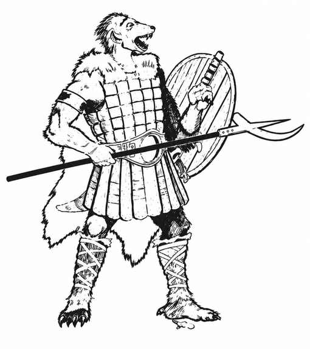

豺狼人 · Gnoll
 |
|
豺狼人以掠夺为生，组成松散的群落，由最强者支配其他成员。群落不承认任何一名豺狼人拥有至高权威，但彼此未必敌对；有时两个或更多群落会短暂结盟，一同战斗、袭击、劫掠，以便更有把握地对付共同的敌人或猎物。豺狼人适应力强，几乎什么地方都能居住，唯独避开极地与干旱地区。它们有名义上的“国王”，本人十分强悍，随从人数是普通首领的两倍，但权力仅及其臂力所能及之处。
每遇到 20 名豺狼人，便有一名领袖型成员，生命值 16 点，按 3 颗生命骰生物攻击。若遇到 100 名或更多，还会额外出现一名酋长（护甲等级 3、生命值 22 点、按 4 颗生命骰生物攻击，每次造成 4–10 点伤害）与 2–12 名护卫（护甲等级 4、生命值 20 点、按 3 颗生命骰生物攻击，每次造成 3–9 点伤害）。若在巢穴遭遇，酋长必定在场，另有 5–20 名护卫；巢穴中雌性与幼崽数量分别相当于雄性的 50% 与 200%。
豺狼人有 85% 的概率住在地下，另有 15% 会占据废弃或夺取的村庄、建筑。地下巢穴有 30% 概率住着 1–3 只巨魔守卫。地表群落有 65% 概率驯养鬣狗或斑鬣狗作宠物与守卫：4–16 只鬣狗（80%）或 2–12 只斑鬣狗（20%）。它们总会囚禁生物供食用或奴役，至少每 10 名豺狼人就有一名俘虏。
豺狼人携带多种武器，人人都有剑；一支典型队伍的武器配置如下：
| 武器 | 概率 |
|---|---|
| 强弓 | 15% |
| 长柄武器 | 35% |
| 双手剑 | 15% |
| 战斧 | 20% |
| 钉头锤 | 15% |
只要较弱一方在数量上没有悬殊劣势，豺狼人通常能与兽人、大地精、熊地精、食人魔甚至巨魔友好相处；它们往往与力量相近的怪物结盟。
豺狼人力气很大，却厌恶劳动，也不擅长采矿。它们有红外视觉，会说自己的种族语、混乱邪恶阵营语、巨魔语；另有 60% 概率会说兽人语和／或大地精语。
外观。 豺狼人外貌近似鬣狗。它们的皮肤呈灰绿色，口鼻附近颜色更深；鬃毛从红灰色到暗黄色不等。眼睛暗黑，爪子呈琥珀色。它们穿着角、金属片与皮革制成的护甲，披着破旧、虫蛀、肮脏的皮毛斗篷与背心，毛皮多为棕、黑或灰色。豺狼人的寿命短暂，通常约 35 年。